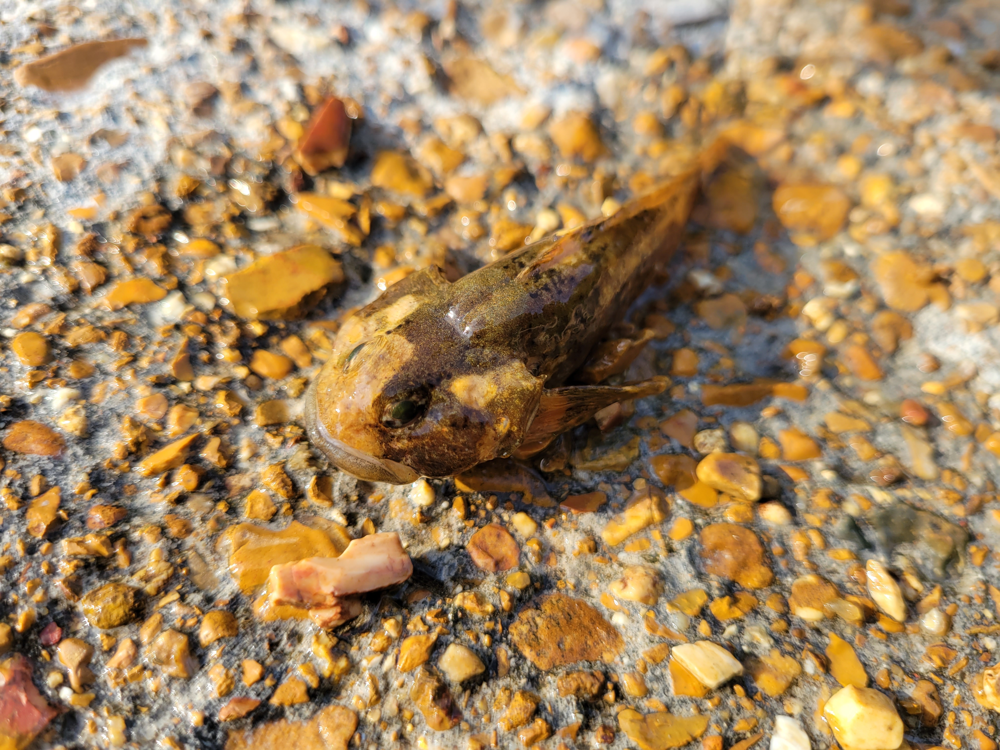

For the past couple of years, my partner Jaymee and I have been taking trips out to various Missouri creeks and rivers. Whenever we go, we always make sure to bring some small fishing nets and a critter cage to catch any small creek animals that might be interesting to check out and observe before releasing them back into their habitat. Here are some pictures of the animals we've caught as well as some info on them! If you'd like to get more detailed info on Missouri wildlife, visit the source that I used for making this page - the Field Guide section of the Missouri Department of Conservation website.
Freshwater wildlife in Missouri
Creek Chub
Although this particular catch was a baby, (only a couple inches long) the Creek Chub is the largest minnow that's native to Missouri. Spawning season for the Creek Chub in Missouri is from April to May. Males make oval shaped nests out of gravel which they vigorously defend. The creek chub has been reported to be a good sporting fish if caught on light tackle. Apparently their nest-building and breeding habits have been studied in detail and make for fascinating reading according to the Missouri Department of Conservation.
- Size: "Total length is typically 5 to 7 inches; maximum about 12 inches."
- Lifespan: "Up to 8 years."
- Diet: "A generalized carnivore, eating mostly insects, but also small fishes, crayfish, worms, and mollusks in lesser quantities."
Longear Sunfish
This was probably one of the larger catches that we've had on our trips. I couldn't believe it when I saw Jaymee lift this fish out of the water with just a small green fish tank net! I couldn't tell if this was just an immature Longear Sunfish, Green Sunfish, or a Bluegill because this family of panfish can look very similar at early stages of development. The Longear Sunfish develop super vibrant colors when they mature and are probably one of the coolest looking fish in Missouri. This fish tends to avoid strong currents and can be found in reservoirs, ponds, and in pools, inlets, and overflow waters adjacent to stream channels as well as most Ozark streams unless they are extreme headwaters. It's mostly diurnal and is kind of a jerk because it enjoys feeding on the eggs of other fish including its own species!
- Size: "Total length is typically 5 to 6 inches; maximum about 7 inches and 4.5 ounces."
- Lifespan: "Up to 6 years."
- Diet: "Carnivorous, feeding on insects, small crustaceans, and some small fish."
Golden Crayfish
The ornery critter in the top left of the picture is a Golden Crayfish. The golden crayfish lives in streams with permanent or swift flow and in riffles on top of rocky bottoms or in beds of aquatic plants. It's a very agile and active strong swimmer and tends to dig up holes underneath rocks and gravelly substrate where it can hide whenever it's not actively looking for something to eat. As one of the most common crayfish species in the Ozarks, it is considered invasive near the White River drainage by Springfield where it has caused declines in native crayfish populations.
- Size: "Adult length is typically about 1 to 3½ inches."
- Lifespan: "Typically 2 - 3 years."
- Diet: "Crayfish are generally omnivores, eating a wide variety of plant and animal materials."
Madtom
This little Madtom was probably one of the harder fish to find on our trip. According to the MDC, they're small, secretive and are rarely seen unless someone is making a special effort to capture them....Ope! I kind of feel attacked by that info. The Madtom prefers to live in strong flowing pools that aren't too cold but it also doesn't like water that is too warm or stagnant. These mini catfish are also nocturnal, hiding beneath coarse gravel by day and emerging at night to forage through shallow gravel pools.
- Size: "Adult length is commonly 2½–4 inches; maximum about 5 inches."
- Lifespan: "A little over 3 years."
- Diet: "Immature midge flies and mayflies, aquatic insects, worms, and seeds."
Creek Darter
Darters are by far the toughest creek fish that we've tried to catch - their name definitely suits them! Much like the Sunfish, these fish get super colorful - a trait that I wasn't expecting to see in a freshwater Missouri fish. Missouri is home to over 44 different types of darters. Their preferred habitats are swift-flowing, clear, rocky streams. They have adapted to this environment by either completely lacking a swim bladder or the presence of a very reduced swim bladder so that they can sink to the bottom whenever they stop swimming. This way they don't get swept downstream. There is a ton of info on these fish that I would love to share but it would be easier visit their page at the Missouri Department of Conservation to learn about these really cool fish.
- Size: "Depending on the species, most grow to about 3 inches long, however, the largest species can grow up to 7 inches long."
- Lifespan: "Usually about 3 years."
- Diet: "Darters usually eat a variety of small aquatic insects such as the larvae of midges, mosquitoes, blackflies, caddisflies, mayflies, and stoneflies, and small crustaceans such as aquatic isopods and amphipods, small crayfish, and sometimes snails. Different species have slightly different diets."
Mottled Sculpin
So this is probably gonna sound super weird but I saw this poor little guy dead (RIP) and washed up on a shallow part of the creek we were at. I hadn't seen anything like it on our previous trips so I decided to take some pictures of it to find out what it was. It turns out that this particular fish is a species of sculpin. Similar to the darters, sculpins also lack a swim bladder so that they can remain near the bottom. Sculpin coloration tends to match the substrate of where they're found. Spawning season for the sculpins occurs from early March through the end of April. Males dig a nest cavity beneath rocks and take care the eggs and fry until they've grown enough to disperse. Females will enter the nest cavity and turn upside down to deposit eggs on the ceiling of the nest. It's also likely that more than one female will use the same nest. Males grow larger than the females and Mottled sculpins in particular don't mature until they are at least 2 years old. Sculpins are a type of fish that belong to the superfamily Cottoidea and are related to scorpionfish and lionfish.
- Size: "Adult length: commonly 2½–5 inches; maximum about 7¼ inches or more."
- Lifespan: "6 years or more."
- Diet: "Sculpins have very large mouths and are able to swallow prey items nearly as large as themselves. The banded sculpin feeds mostly at night on crayfish, immature stages of aquatic insects, small fish (including other sculpins), and snails. They often capture their prey by ambush."